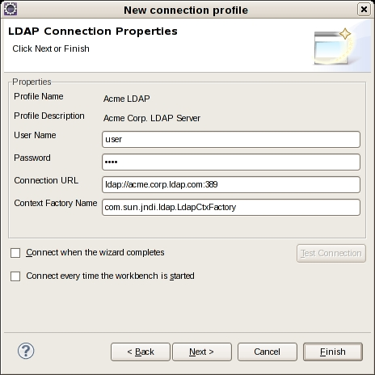
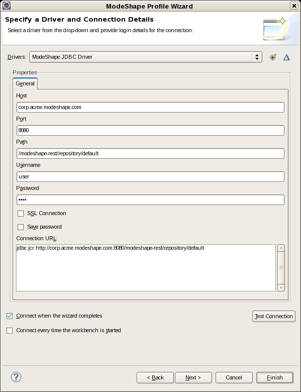
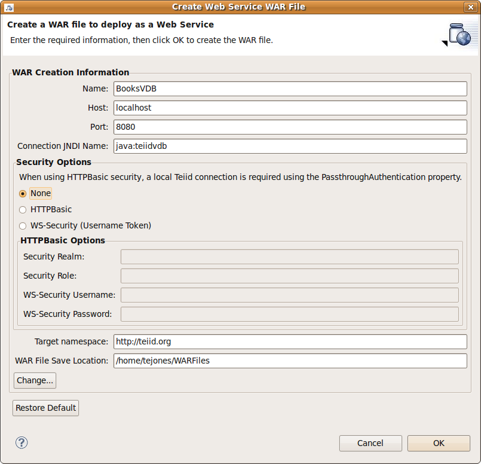
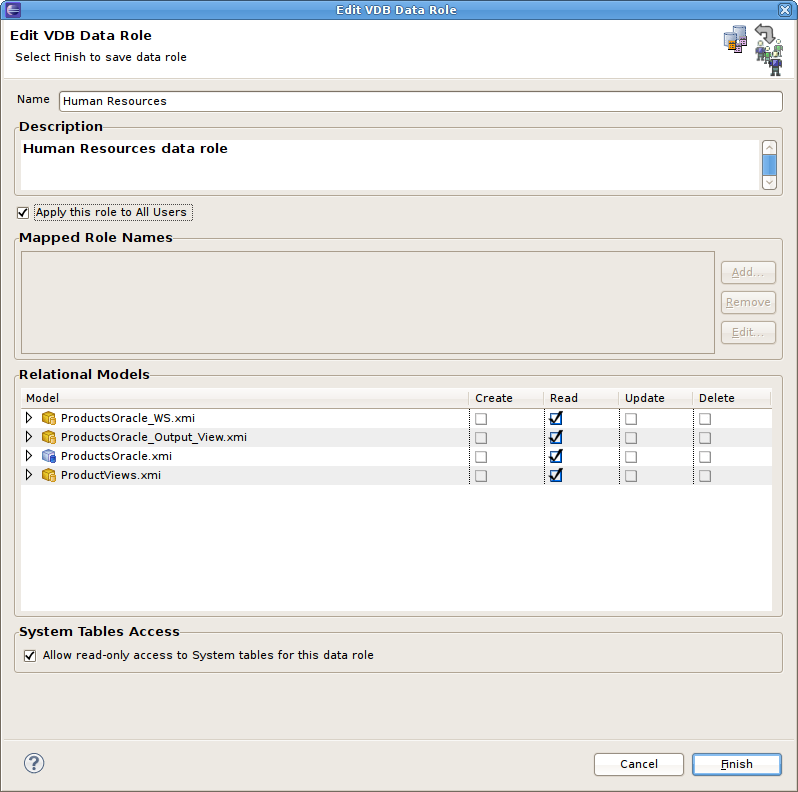

Last revised September 24, 2010
Teiid Designer is a graphical data modeling tool that enables rapid definition, integration, management and testing of data services without programming using the Teiid runtime engine.
For more details on Teiid and Teiid Designer visit: http://www.teiid.org
Connection Profile Contributions |
|
|
LDAP connection |
The LDAP Connection Profile supports creation of an LDAP Data Source in Teiid. Teiid Designer does not have an importer for LDAP metadata, it must be manually modeled, but this connection profile can enable the preview of LDAP data in Teiid Designer and the assignment of the LDAP Data Source for a Teiid VDB.  |
|
ModeShape JDBC connection |
The ModeShape Connection profile enables the JDBC importer to access metadata in a ModeShape repository and create relational models of the data. Using these models Teiid can then federate information stored in a ModeShape repository with data stored in other sources.  |
Web Services |
|
|
War Generation |
In Beta1 Teiid Designer's the Web Service War Generation Wizard now supports both HTTPBasic and WS-Security (Username Token) security. The HTTPBasic implementation allows the user to leverage either the Teiid security domain or a custom domain. The WS-Security option lays the configuration groundwork for the user while allowing for customized authentication. supports generation of deployable web service War Files.  |
VDB Data Roles |
|
|
Authorization |
In Beta1 Teiid Designer's VDB Data Role Wizard includes an option to allow data access to ALL users defined in the deployed server location. By checking the "Apply this role to All Users" the Mapped Role names panel is disabled and any previously entered mapped role names will be removed from this data role.  |